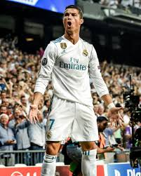
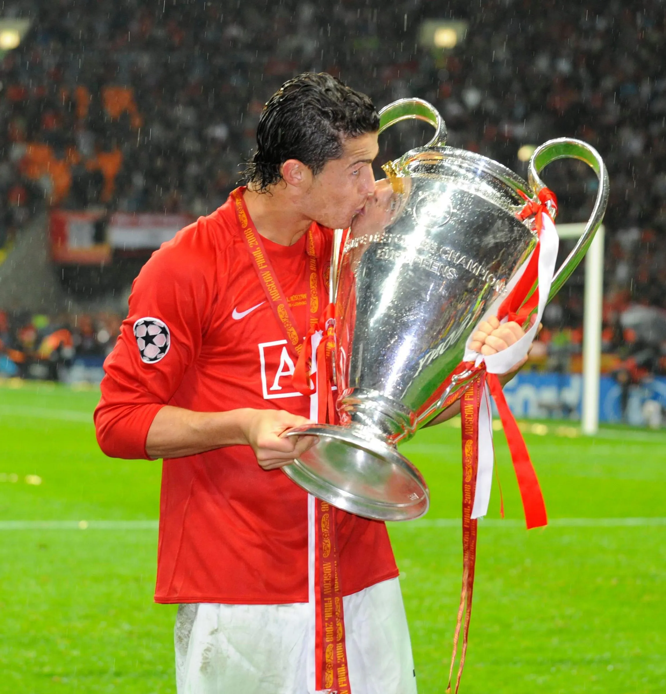

Добро пожаловать на сайт о Криштиану Роналду
Информация
Криштиану Роналду - один из величайших футболистов всех времен, известный своей выдающейся карьерой и рекордными достижениями. Родился 5 февраля 1985 года в Фуншале, Мадейра, Португалия, Роналду начал свою профессиональную карьеру в "Спортинге", а затем играл за такие клубы, как "Манчестер Юнайтед", "Реал Мадрид", "Ювентус" и "Аль-Наср".
Биография
Криштиану Роналду начал свою профессиональную карьеру в "Спортинге" Лиссабон в 2002 году. В 2003 году он перешел в "Манчестер Юнайтед", где быстро стал звездой мирового футбола. В 2009 году Роналду перешел в "Реал Мадрид" за рекордную на тот момент сумму. С 2018 по 2021 год он играл за "Ювентус", а затем вернулся в "Манчестер Юнайтед". В 2022 году Роналду присоединился к саудовскому клубу "Аль-Наср".

Достижения
Криштиану Роналду имеет множество достижений, включая пять Золотых мячей, титулы Ла Лиги, Премьер-лиги и Серии А, а также пять побед в Лиге чемпионов УЕФА. Он является лучшим бомбардиром в истории Лиги чемпионов и национальной сборной Португалии.

Личная жизнь
Вне поля Криштиану Роналду известен своей благотворительной деятельностью и активной жизненной позицией. Он отец четверых детей и часто делится моментами своей жизни в социальных сетях. Роналду также активно занимается бизнесом и имеет собственные бренды одежды и аромата.

Статистика
- Забитые голы: более 820 в официальных матчах
- Победы в Лиге чемпионов УЕФА: 5
- Золотые мячи: 5
Контакты
Следите за последними новостями о Криштиану Роналду в социальных сетях: